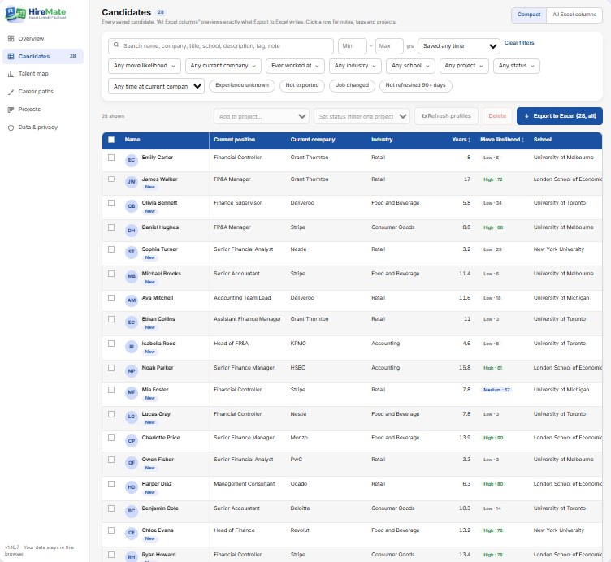
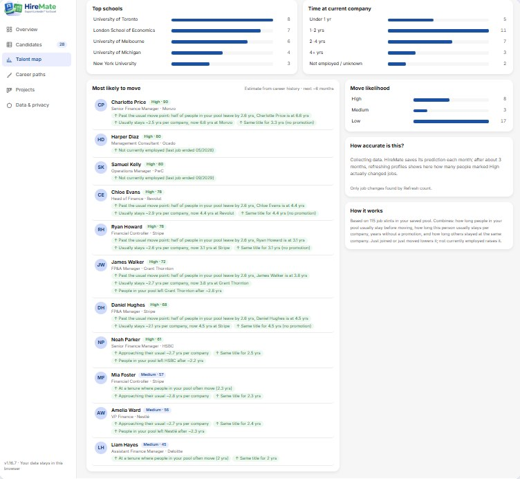
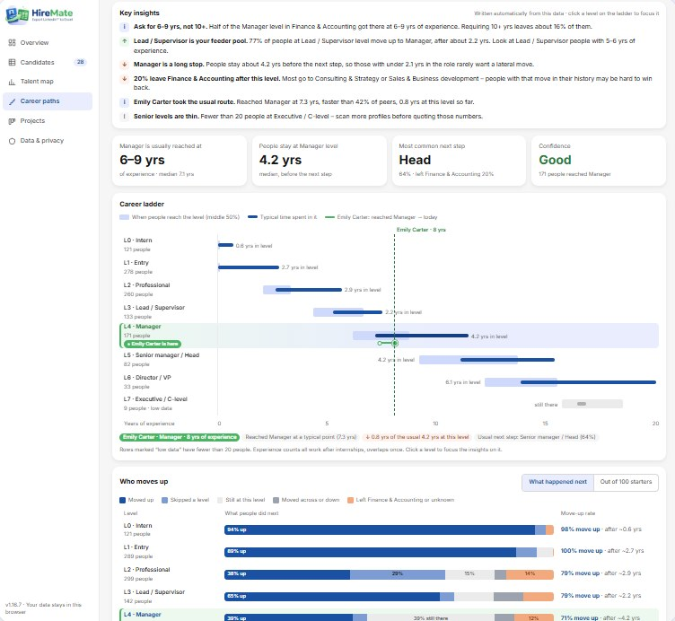

Export in one click. Know who will move. Benchmark any career.
HireMate is a Chrome side panel for recruiters: save LinkedIn™ profiles to a clean Excel file in one click, see which candidates are likely to move, and benchmark the real career path of any role — without your data leaving the browser.

Three things HireMate does for you
Save time on every profile, know who to call first, and set realistic expectations with hiring managers.
Any profile to Excel in one click
Open a candidate’s LinkedIn™ profile and HireMate reads every role, period, company, industry, job description and school. Save it with one click (Alt+S) and export a clean Excel file — one row per candidate, numbered columns ready to filter.
- Edit any field before saving
- Search people by title, location, company and industry
- Export everyone, a filtered view or just the rows you pick

Know who is likely to move
HireMate rates every saved candidate High, Medium or Low for changing jobs in the next months — always with the reasons, so you know who to call first.
- Time in role vs. their own career pattern
- Years without a promotion and how long people stay at their company
- Job changes flagged when you refresh profiles

Benchmark the career path of any role
Scan the market for a job family in the countries or cities you hire in and see the whole ladder, from intern to C-level: how many years of experience people have when they reach each level, how long they stay and who moves up.
- Key insights for intake meetings — e.g. “Ask for 6–9 yrs, not 10+”
- Who moves up, stays or leaves at each level
- Compare any candidate with the market — 20 job families, titles read in 9 languages

Also included
Search & shortlist
Search people by title, location, company and industry, see current role and total experience at a glance, and save the ones you like.
Talent map
Where your saved talent works, their industries, schools and experience — the snapshot for every hiring-manager intake.
Hiring pipeline
One board per opening: drag candidates from Sourced to Hired, add notes and tags, and track your funnel.
How it works
Install & open
Add HireMate to Chrome and pin it. Click the icon to open the side panel.
View & save
Open a candidate’s profile — HireMate reads it for you. Edit anything, then save it to your list.
Export & act
Export to Excel, call the people most likely to move first, and use career paths to agree realistic requirements with hiring managers.
Start free. Upgrade when it saves you hours.
Free
For occasional sourcing
- Save profiles & export to Excel in one click
- “Most likely to move”: preview of the top 3
- Career ladder from your saved candidates
- Search: extract 10 profiles per run, up to 50 per day
- Dashboard, talent map, notes & tags, up to 3 projects
Premium
For recruiters who source every day
- Everything in Free
- Full “Most likely to move” list with reasons
- Career-path market scans — key insights, who moves up and candidate comparison
- Unlimited search extraction — no daily limit, 50 profiles per run
- Current position, company & total experience right in search results
- Unlimited projects
Prices in USD; taxes may apply. Cancel anytime. Secure checkout by Lemon Squeezy.
Frequently asked questions
Where is my candidate data stored?
Only in your own browser (Chrome’s local extension storage). HireMate has no server that receives your candidate data. You can export a backup or delete everything at any time from the dashboard.
Do I need a LinkedIn Recruiter account?
No. HireMate works with the profiles you can already see with your own LinkedIn account. Free LinkedIn accounts have their own search limits, which HireMate respects.
Does HireMate send messages or connection requests?
No. HireMate never sends messages, invitations or posts on your behalf. Bulk features are capped and throttled to protect your account.
How is “likely to move” calculated?
From career patterns in your own saved pool: how long people usually stay before moving, how long this person usually stays per company, time without a promotion and similar signals. It is an estimate, shown with its reasons — not a fact about any person.
How do career paths work?
Pick a job family, a location and, if you like, an industry. HireMate searches LinkedIn with your own session, reads up to 50 profiles per run at a human pace and places every role on an eight-level ladder from intern to C-level; your saved candidates are added too. Run more scans to grow the benchmark — people already in it are skipped.
What does a market scan store?
Only anonymous career data: job titles mapped to a job family and level, with their dates. No names, photos or profile links are kept, scanned people are not added to your candidates, and everything stays in your browser.
What do I get for free?
One-click save and Excel export, the dashboard, talent map and a career ladder from your saved candidates are free. The free plan lets you extract 10 search results per run and up to 50 per day, includes up to 3 projects and a preview of the top 3 people most likely to move. Premium removes these limits and adds career-path market scans with insights, plus current position, company and total experience in search results.
Can I cancel Premium?
Yes, anytime from the link in your receipt email. You keep Premium until the end of the period you paid for. See our Refund Policy.
Export, prioritise and benchmark — in one side panel.
Free to install. No account needed.